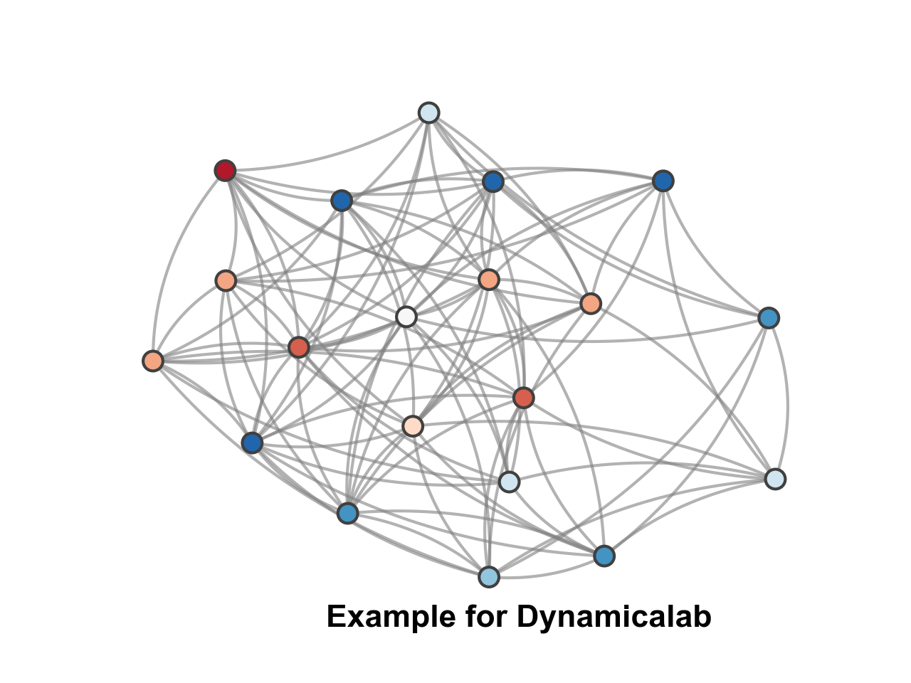

dynamicalab.drawing.draw_networks¶
-
dynamicalab.drawing.draw_networks(G, pos, ax, mu=0.08, edge_color='black', edge_width=1.0, edge_alpha=1.0, use_edge_weigth=False, node_width=1.0, node_size=80.0, node_border_color='#404040', node_color='#EDEDED', node_alpha=1.0, arrow_scale=20.0, loop_radius=0.0, letter='', letter_fontsize=13, letter_pos=[0.87, 0.02], letter_color='black')[source]¶ This function draws networks.
Parameters
- GNetworkx Graph
A Networkx
GraphorDiGraph.- posdict
A dictionary of nodes positions.
- axMatplotlib Axes object
Draw the network in the specified Matplotlib axes.
- mufloat(default=0.05)
Level of curvature. Should always be positive. If zero, then edges are straight.
- edge_colorstr or list(default=”black”)
If a list, then each entry matches the color of the edge. when iterated through
edges. If a string, then each edge will have the same color.- edge_widthfloat or list(default=1.0)
Use this if
use_edge_weigth==Falsefor edge widths. If a list, each element must be in the same order asG.edges()- edge_alphafloat(default=1)
Edges opacity.
- use_edge_weigthBool(default=False)
Use the key
weightof the edges attributes to choose the thickness of the edges.- node_widthFloat(default=1.0)
Node border width.
- node_sizeFloat(default=80)
Controls the node size (proportional to its radius).
- node_border_colorString(default=”#404040”)
Node border color.
- node_colorString or list(default=”#EDEDED”)
Node background color.
- node_alphafloat(default=1.0)
Node opacity.
- arrow_scalefloat(default=20)
Control the size of the arrows. If equals to zero, then the arrows are invisible.
- loop_radiusfloat(default=0)
If
edgescontains self-loops, i.e.edge==(nodeA, nodeA), then it draws a self-loop which is composed of a simple circle. The radius of the circle is controlled byloop_radius.- letterstring(default=”“)
Text that can be positioned on the figure.
- letter_fontsizefloat(default=13)
Font size of the text .
- letter_posList(default=[0.87,0.02])
Position of the text given in relative size of the plot. The first element is
x, the second isy.- letter_colorString(default=”black”)
Color of the text.
Example
import networkx as nx import dynamicalab.drawing as draw import matplotlib.pyplot as plt import seaborn as sns import numpy as np G = nx.erdos_renyi_graph(20,0.5) pos = nx.spring_layout(G) edges = G.edges() sns.set(style="ticks") fig = plt.figure() ax = plt.gca() node_colors = np.random.choice(['#b2182b','#d6604d','#f4a582','#fddbc7','#f7f7f7','#d1e5f0','#92c5de','#4393c3','#2166ac'], 20, replace=True) draw.draw_networks(G, pos, ax, mu=0.08, edge_color="gray", edge_width=1.5, edge_alpha=0.6, use_edge_weigth=False, node_width=1.5, node_size=100.0, node_border_color="#404040", node_color=node_colors, node_alpha=1.0, arrow_scale=0.0, loop_radius=0, letter="Example for Dynamicalab", letter_fontsize=16, letter_pos=[0.3, -0.05], letter_color="black")